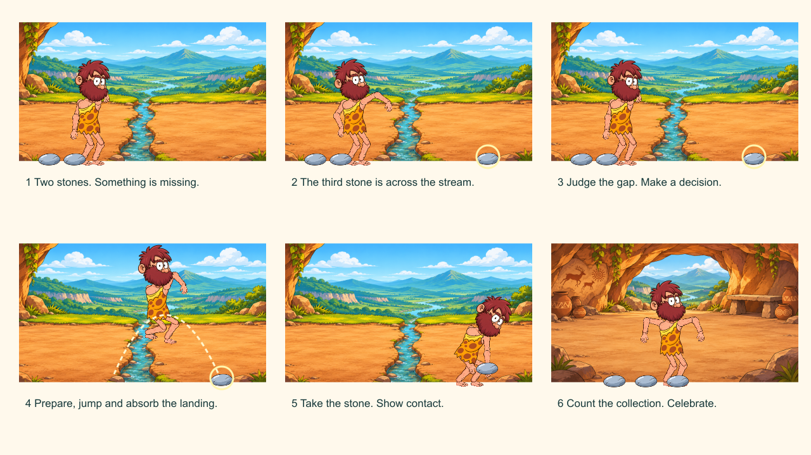
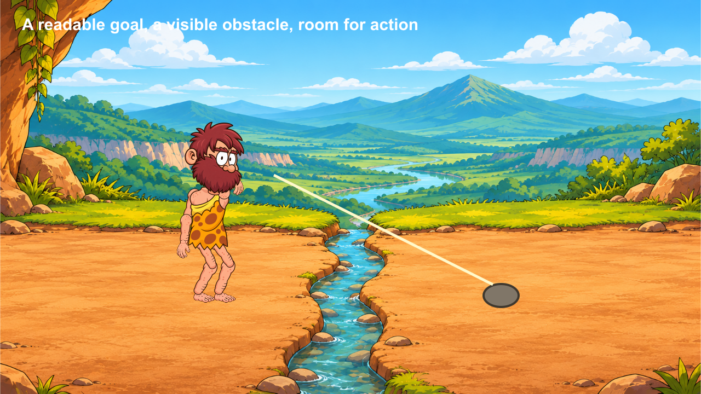

Notes and checked stages stay in this browser when storage is available. They are not submitted, graded or shared with school apps. Read aloud uses the browser voice; teacher recordings have not been supplied.
Restore uses the JSON recovery file from this workbook. The readable text file is for review only. Download before changing device. Keep personal information out of practice notes.
How animators work
Block the meaning, test the action, refine the transition and keep a revision trail. A smooth result still needs readable intention, believable contact and a clear delivery.
Understand before you move
Staging directs attention. A story beat changes what the character knows, wants or does.
A Scene is a main-timeline section in Animate. A shot is one uninterrupted camera view. One Scene may contain several shots. This project begins with one shot per Scene so that story and file structure remain manageable.
Predict the result of today’s main action, then test that prediction in Animate.
Evidence of understanding
We look for the finished action, an observed repair and a brief explanation using your own timeline.
Independent director condition: Move the third stone to a less obvious place. Change staging, gaze or timing so a viewer can still identify the goal without narration.
Defence: Where does the audience first understand the goal, and which visual choice makes it clear?
Support settings help access the same task. They do not lower the success criteria. School outcome/assessment registration remains for the teacher to confirm.
Session 1 · Lesson 1
Build and understand
Provisional 70-minute session: a short explanation, four guided stages, then a check. Actual classroom timing needs a cold run.
TODAYBuild a readable three-Scene animatic before polishing any movement.
01
Turn the premise into six changes
IN SHORTCover the captions. A partner should be able to describe the want, obstacle and result from the drawings.
READ ALOUD
DOCUMENT: Caveman story · Workbook 01 · main Scene or named action as stated below SELECT: Paper or the printable storyboard; no Animate selection yet. TOOLS / ROUTE: Storyboard → goal → obstacle → decision → action → result.
Write six captions: notice two stones; spot the third; judge the stream; jump and land; retrieve the stone; count and celebrate.
Draw a thumbnail for each caption. Show the Caveman, the important prop and the direction of attention. Use arrows only for movement, not as a substitute for drawing the next pose.
Below each panel, write what changes. If two panels communicate the same information, combine them.
STEP CHECKLIST
GLOSSARY
beat: A meaningful change in action, information or intention.
thumbnail: A small, quick composition drawing.

Illustrated story thumbnails: six changes develop one goal. These are authored planning drawings, not application screenshots.
WHYViewers need a chain of causes. A collection of effects does not explain why he jumps.
CHECKCover the captions. A partner should be able to describe the want, obstacle and result from the drawings.
FIXIf the third stone looks like background decoration, isolate its silhouette, move it into the gaze line or give its reveal a short hold.
WORKED EXAMPLE · DIFFERENT OBJECTA squirrel sees a nut behind a fence, tests the gap and chooses a route. Each panel changes its decision.
STRETCH (AFTER THE CHECK PASSES)Add a single visual joke after the result, without introducing a second story.
Method basis: A1 · A2. Values and sequence are authored for this project.
02
Create the film document
IN SHORTDoc properties show 1280 × 720 and 24 fps; the file has a saved location.
READ ALOUD
DOCUMENT: Caveman story · Workbook 01 · main Scene or named action as stated below SELECT: New document preset; then click an empty area of the Stage. TOOLS / ROUTE: File → New → ActionScript 3.0; Properties → Doc.
Create an ActionScript 3.0 document. Set width 1280, height 720 and frame rate 24 fps. Use pixels.
Save as Caveman_01_story.fla in a project folder containing Assets, Audio, Exports and Evidence.
Write the document type and frame rate on your storyboard. Keep 24 fps through the series.
STEP CHECKLIST
GLOSSARY
Stage: The visible movie area.
frame rate: The number of timeline frames played each second.
WHYThe document type affects sound and camera workflows. A stable frame rate makes timing calculations meaningful.
CHECKDoc properties show 1280 × 720 and 24 fps; the file has a saved location.
FIXIf you created HTML5 Canvas, create the correct document now and import the artwork again. Do not assume that changing publish settings changes document type.
WORKED EXAMPLE · DIFFERENT OBJECTAt 24 fps a 48-frame shot lasts two seconds; at 12 fps the same frames last four.
STRETCH (AFTER THE CHECK PASSES)Explain why increasing fps does not add new designed poses.
Method basis: A1 · A2. Values and sequence are authored for this project.
03
Build the three main Scenes
IN SHORTAll three names are visible in the Scene panel and play in story order.
READ ALOUD
DOCUMENT: Caveman story · Workbook 01 · main Scene or named action as stated below SELECT: The main timeline, not the inside of a symbol. TOOLS / ROUTE: Window → Other Panels → Scene; Insert → Scene; double-click Scene names.
Rename Scene 1 Discovery. Add Crossing and Me_clever. Order them Discovery → Crossing → Me_clever in the Scene panel.
In each Scene create Background, Props, Character and Notes layers. Lock Background after placement; keep Notes as a guide layer so notes do not appear in the movie.
Return to Discovery using the Scene panel. Check the breadcrumb above the Stage; it must show the Scene, not a nested character symbol.
STEP CHECKLIST
GLOSSARY
Scene: A section of the main movie timeline.
layer: A separate timeline track for artwork or sound.
WHYScenes divide the production into story sections. Named layers reduce wrong-object edits.
CHECKAll three names are visible in the Scene panel and play in story order.
FIXIf artwork disappears after switching Scenes, it may belong to another Scene. Import or paste a deliberate copy into the intended Scene; do not duplicate random Library items.
WORKED EXAMPLE · DIFFERENT OBJECTA three-shot weather report can use Intro, Forecast and Signoff Scenes with the same layer naming.
STRETCH (AFTER THE CHECK PASSES)Plan when a shot change within a Scene would be clearer than adding another Scene.
Method basis: A1 · A2. Values and sequence are authored for this project.
04
Stage the goal and obstacle
IN SHORTAt a small preview size, the Caveman, gap and goal are distinguishable. His feet can meet the ground plane.
READ ALOUD
DOCUMENT: Caveman story · Workbook 01 · main Scene or named action as stated below SELECT: Background layer frame 1; then the Props layer. TOOLS / ROUTE: File → Import → Import to Stage; Properties → Position and Size; Modify → Convert to Symbol.
Place the stream background in Discovery and Crossing, and the cave background in Me_clever. This establishes the goal before the jump. Scale to fill the Stage without stretching one dimension independently.
Place two stones near the Caveman on the near bank in Discovery. Show the third stone clearly on the far bank in BOTH Discovery and Crossing. Keep its location consistent when the Scene changes. Convert each reusable prop to a Graphic symbol named Stone.
Keep a clear path of action from the near bank to the far bank. Use the Caveman reference as a temporary blocked pose. Do not animate the flattened reference as if its limbs were articulated.
STEP CHECKLIST
GLOSSARY
staging: Arranging elements to make an idea easy to read.
Graphic symbol: Reusable artwork with a timeline that can synchronize with its parent timeline.

Staging study: the stream is an obstacle and the isolated stone is a goal. Authored illustration using supplied Caveman art.
WHYThe viewer must read the destination and the danger before the jump begins.
CHECKAt a small preview size, the Caveman, gap and goal are distinguishable. His feet can meet the ground plane.
FIXMove the goal away from similarly coloured rocks. Enlarge it slightly for readability; do not add explanatory text as the first repair.
WORKED EXAMPLE · DIFFERENT OBJECTA bright envelope on a dark desk is easier to notice than one hidden among identical papers.
STRETCH (AFTER THE CHECK PASSES)Compare two camera distances and justify which better explains the jump.
Method basis: A1 · A2. Values and sequence are authored for this project.
Session 2 · Lesson 2
Refine, repair and direct
Provisional 70-minute session: a short explanation, four guided stages, then a check. Actual classroom timing needs a cold run.
TODAYBuild a readable three-Scene animatic before polishing any movement.
05
Block the film with held poses
IN SHORTThe silent film shows a decision before the jump and a result after it. Scene changes occur once, in order.
READ ALOUD
DOCUMENT: Caveman story · Workbook 01 · main Scene or named action as stated below SELECT: Character layer frames in each main Scene. TOOLS / ROUTE: Timeline → Insert Frame / Insert Keyframe; Onion Skin for reference.
Use held drawings or reference poses to block Discovery at about 144 frames and Crossing at about 240 frames. These are planning lengths, not final performance timings.
For Me_clever, reserve a temporary 144 frames. Label it temporary until the real recording is placed in Workbook 6.
Use a keyframe only when the pictured pose or composition changes. Add ordinary frames to extend a hold. Test the entire movie, not only the current Scene.
STEP CHECKLIST
GLOSSARY
animatic: A timed sequence of story drawings used to test a film.
hold: A pose sustained for several frames.
WHYA held-pose animatic exposes pacing and missing story information before detailed animation becomes expensive.
CHECKThe silent film shows a decision before the jump and a result after it. Scene changes occur once, in order.
FIXIf a hold is too short to understand, add frames. If everything feels slow, shorten the uninformative hold rather than deleting the decision.
WORKED EXAMPLE · DIFFERENT OBJECTA door creak can be blocked with closed, ajar and open drawings before animating the handle.
STRETCH (AFTER THE CHECK PASSES)Show two versions of the decision hold and ask a viewer which implies greater caution.
Method basis: A1 · A2. Values and sequence are authored for this project.
06
Use a deliberate cut back to the cave
IN SHORTA partner understands that he returned with the stone, rather than losing it or appearing in an unrelated place.
READ ALOUD
DOCUMENT: Caveman story · Workbook 01 · main Scene or named action as stated below SELECT: The end of Crossing and start of Me_clever. TOOLS / ROUTE: Scene panel → Crossing / Me_clever; main timeline.
End Crossing with the stone visibly secured. Begin Me_clever with the third stone among the collection.
Keep the Caveman looking or moving in a compatible screen direction. Use the cave background to signal that time and location have changed.
Write one production note: “Return journey omitted; the cut advances time.” Do not accidentally imply that a single step teleports him across the stream.
STEP CHECKLIST
GLOSSARY
ellipsis: A cut that omits a period of story time.
continuity: Consistency that helps an audience follow action across shots.
WHYEditing can omit routine travel while preserving cause and continuity.
CHECKA partner understands that he returned with the stone, rather than losing it or appearing in an unrelated place.
FIXIf the cut is confusing, add a brief departure pose or a settling pose at the cave. Add only the information the viewer needs.
WORKED EXAMPLE · DIFFERENT OBJECTA baker puts dough in an oven; a later shot shows bread cooling. The cut omits baking time.
STRETCH (AFTER THE CHECK PASSES)Design a matched-action cut without increasing the number of Scenes.
Method basis: A1 · A2. Values and sequence are authored for this project.
07
Repair an unreadable version
IN SHORTYour evidence identifies a visible problem, one repair and a viewer response after the repair.
READ ALOUD
DOCUMENT: Caveman story · Workbook 01 · main Scene or named action as stated below SELECT: A duplicate saved as Caveman_01_repair.fla. TOOLS / ROUTE: File → Save As; timeline holds and prop placement.
Deliberately make the goal stone hard to see or remove the decision hold in the duplicate. Play it to a partner without explaining.
Ask what the Caveman wants and why he jumps. Record the exact misunderstanding.
Repair one variable, replay and retain before/after frames. Explain why the repair addresses that misunderstanding.
STEP CHECKLIST
GLOSSARY
revision: A purposeful change based on a problem or feedback.
WHYDiagnosis connects visual choices to audience understanding.
CHECKYour evidence identifies a visible problem, one repair and a viewer response after the repair.
FIXIf your explanation says only “better,” name the missing information and the visual cue that now supplies it.
WORKED EXAMPLE · DIFFERENT OBJECTMoving a button away from a busy pattern repairs visibility more directly than changing every page colour.
STRETCH (AFTER THE CHECK PASSES)Test the film with the sound off and the screen reduced to a thumbnail.
Method basis: A1 · A2. Values and sequence are authored for this project.
08
Direct your first independent change
IN SHORTThe goal remains readable under your new condition and the reopened file retains all three Scenes.
READ ALOUD
DOCUMENT: Caveman story · Workbook 01 · main Scene or named action as stated below SELECT: Your own story file; preserve the guided version. TOOLS / ROUTE: Save As → Caveman_01_director.fla.
Apply the changed-condition brief above. Keep the same goal, obstacle, three Scenes and character identity.
Re-stage the discovery; do not copy the worked composition unchanged. Test the silent animatic with a new viewer.
Save, close and reopen. Submit the storyboard, FLA and one before/after explanation using your teacher’s named collection route. This local guide does not submit school work.
STEP CHECKLIST
GLOSSARY
transfer: Using a learned idea in a changed situation.
WHYThe independent variation shows whether you can transfer staging decisions.
CHECKThe goal remains readable under your new condition and the reopened file retains all three Scenes.
FIXIf you changed the story to avoid the problem, restore the constraint and solve it through composition or timing.
WORKED EXAMPLE · DIFFERENT OBJECTIndependent task: use the success criteria; no worked director solution is supplied.
STRETCH (AFTER THE CHECK PASSES)Create a second ending only after the core three-Scene story reads clearly.
Method basis: A1 · A2. Values and sequence are authored for this project.
Before you submit
Student QA.
Evidence conversation
Keep it short and specific.
SENTENCE FRAMES
At frame ___, I chose ___ so the viewer could ___. The problem was caused by ___. I changed ___ and checked ___. Under the changed condition, I revised ___ because ___.
Figures marked Illustration are drawn, not screenshots. Step values are starting points authored for this project. Draft for teacher review; not yet classroom-piloted.